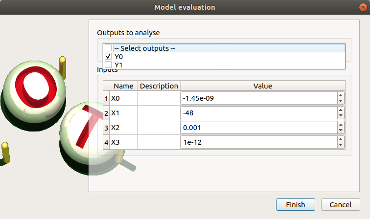
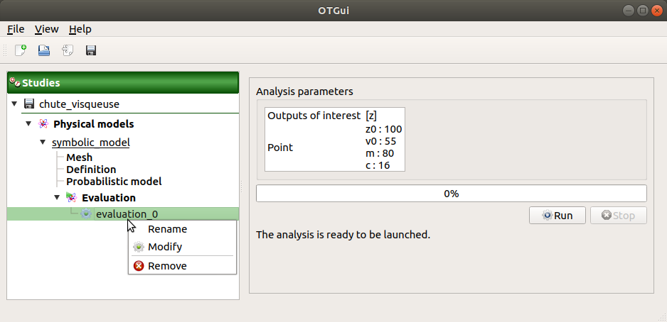
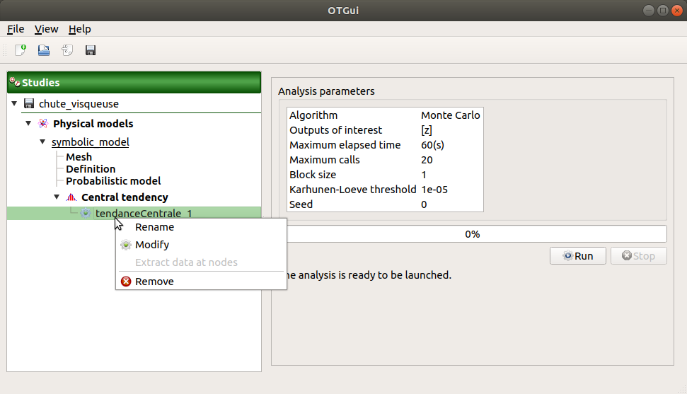

User manual - Field analyses¶
- The interface allows to launch the following types of field analysis:
Model evaluations
Central tendency analysis
1- Model evaluation¶
The user may evaluate the physical model for defined input values.
- Create a new model evaluation through:
The Definition item in the context menu of the relevant model in the study tree

The Model evaluation box of the model diagram

The New evaluation item in the context menu of the Evaluation section

1-1 Definition¶
When this analysis is required, the following window appears to set its parameters.
- When an evaluation is required, a window appears, in order to set up:
The outputs of interest (Select outputs - default: all outputs are evaluated). At least one variable must be selected to validate the window.
The value of the input variables (default: value in the physical model definition). The values are expected to be floating points or integer.
1-2 Launch¶
When the «Model Evaluation» window is validated, a new element appears in the study tree, below Evaluation.
- Its context menu has the following actions:
Rename: Rename the analysis
Modify: Reopen the setting window to change the analysis parameters
Remove: Remove the analysis from the study
This item is associated with a window showing the parameter list, a progress bar and Run/Stop buttons, to launch or stop the analysis.
1-3 Results¶
When the evaluation is finished, a result window appears. This window gathers the following tabs:
The Result tab shows for the selected output (left column):
- the Trajectory tab shows the output values versus the mesh vertices.
Use the Graph settings window to set up graphical parameters.
- Graph interactivity:
Right-click to select the points of trajectories
Left-click to translate the graph
Mouse wheel up/down to zoom in/zoom out
The Table tab presents the resulting output values for each mesh nodes. The table can be exported (Export button).
- Table interactivity:
Left-click (optional: + Ctrl) on lines to select them
Left-click on column header to sort values in ascending or descending order
Left-click on a column header and drag it in another place to change columns order
The Input tab shows:
The Table tab reminds the input point. The table can be exported (Export button).
- Table interactivity:
Left-click (optional: + Ctrl) on lines to select them
Left-click on column header to sort values in ascending or descending order
Left-click on a column header and drag it in another place to change columns order
The Parameters tab reminds the user of all the parameters values to perform the analysis.
The Model tab shows the model content used to perform the analysis.
2- Central tendency analysis¶
The central tendency analysis can only be performed with the MonteCarlo sampling method. In order to perform a central tendency analysis, build first a probabilistic model.
- New central tendency analysis can be created thanks to:
the context menu of the probabilistic model item
the Central tendency box of the model diagram
the context menu of the Central tendency item (if it already exists)
2-1 Definition¶
- When an analysis is required, a window appears, in order to set up:
the outputs of interest (Select outputs - default: all outputs are analyzed)
- Stopping criteria of the algorithm (Select at least one criterion to validate the window):
the maximum computation time in days(d), hours(h), minutes(m) or seconds(s) (default: one minute)
the maximum sampling size (default: 10000, expected: integer)
Evaluation parameter: the block size – the number of runs launched simultaneously – for parallelization purposes (default=1; expected= integer). It must be less than the maximum sampling size.
- Advanced Parameters (default: hidden):
the Karhunen-Loeve threshold (default: 1e-5, expected: float)
the seed of the random generator (default: 0, positive integer expected)
2-2 Launch¶
When the Central tendency window is validated, a new element appears in the study tree, below Central tendency.
- Its context menu has the following actions:
Rename: Rename the analysis
Modify: Reopen the setting window to change the analysis parameters
Remove: Remove the analysis from the study
This item is associated with a window showing the parameter list, a progress bar and Run/Stop buttons, to launch or stop the analysis.
2-3 Results¶
When the analysis is finished or stopped, a result window appears.
The Trajectories tab, the Result/Table tab, the Bag chart tab, the Functional bag chart tab, the Input/Table tab and the Plot matrix tab are linked: when the user selects some points in one of these tabs, they are automatically selected in the other tabs.
The results window gathers the following tabs:
The Result tab shows for the selected output (left column):
- the Trajectories tab shows for each input point, the output values versus the mesh vertices.
Use the Graph settings window to set up graphical parameters and select the trajectories to display
- Graph interactivity:
Right-click to select the points of trajectories
Left-click to translate the graph
Mouse wheel up/down to zoom in/zoom out
The Table tab presents the resulting output values for each input values (lines) and each mesh nodes (columns). The table can be exported (Export button).
- Table interactivity:
Left-click (optional: + Ctrl) on lines to select them
Left-click on column header to sort values in ascending or descending order
Left-click on a column header and drag it in another place to change columns order

- the Bag chart tab shows the explained variance (PC2 (=second principal component) versus PC1 (=first principal component)).
Use the Graph settings window to set up graphical parameters.
- Graph interactivity:
Right-click to select points
Left-click to translate the graph
Mouse wheel up/down to zoom in/zoom out
- the Functional bag chart tab shows the 50% and 95% quantiles.
Use the Graph settings window to set up graphical parameters.
- Graph interactivity:
Right-click to select trajectories
Left-click to translate the graph
Mouse wheel up/down to zoom in/zoom out
- the Mean trajectory tab shows the mean and 5% and 95% quantiles of the trajectories.
Use the Graph settings window to set up graphical parameters and select the trajectories to display
- Graph interactivity:
Left-click to translate the graph
Mouse wheel up/down to zoom in/zoom out
The Input tab shows:
The Table tab presents the input sample generated by the Monte Carlo sampling method. The table can be exported (Export button).
- Table interactivity:
Left-click (optional: + Ctrl) on lines to select them
Left-click on column header to sort values in ascending or descending order
Left-click on a column header and drag it in another place to change columns order
The Plot matrix tab: histograms of the distribution of each variable (diagonal) and scatter plots between each couple of input variables (off-diagonal).
Use the Graph settings window to set up graphical parameters.
- Graph interactivity:
Right-click to select points
Left-click to translate the graph
Mouse wheel up/down to zoom in/zoom out

The Decomposition tab shows the result of the Karhunen-Loeve decomposition, for the selected output (left column):
the Modes tab shows the modes of the Karhunen Loeve decomposition.
Use the Graph settings window to set up graphical parameters and select the trajectories to display
- Graph interactivity:
Right-click to select the points of trajectories
Left-click to translate the graph
Mouse wheel up/down to zoom in/zoom out

The Eigenvalues tab presents the eigenvalues of the modes and a plot of the cumulative eigenvalue sum.
Use the Graph settings window to set up graphical parameters and select the trajectories to display
- Graph interactivity:
Left-click to translate the graph
Mouse wheel up/down to zoom in/zoom out

the ξi tab shows the projections of the trajectories in the Karhunen-Loeve decomposition:
the PDF/CDF tab presents the PDF/CDF of the ξi sample together with the distribution PDF
Use the Graph settings window to set up graphical parameters and select the ξi and the graphic type: PDF or CDF (default: PDF)
- Graph interactivity:
Right-click to select the points of trajectories
Left-click to translate the graph
Mouse wheel up/down to zoom in/zoom out
The Plot matrix tab: histograms of the distribution of each variable (diagonal) and scatter plots between each couple of ξi variables (off-diagonal).
Use the Graph settings window to set up graphical parameters.
- Graph interactivity:
Right-click to select points
Left-click to translate the graph
Mouse wheel up/down to zoom in/zoom out

The Correlation tab presents the empirical correlation of the output between the nodes of the mesh.
Use the Graph settings window to set up graphical parameters.
- Graph interactivity:
Left-click to translate the graph
Mouse wheel up/down to zoom in/zoom out

The Parameters tab reminds the user of all the parameters values to perform the analysis.
The Model tab shows the model content used to perform the analysis.